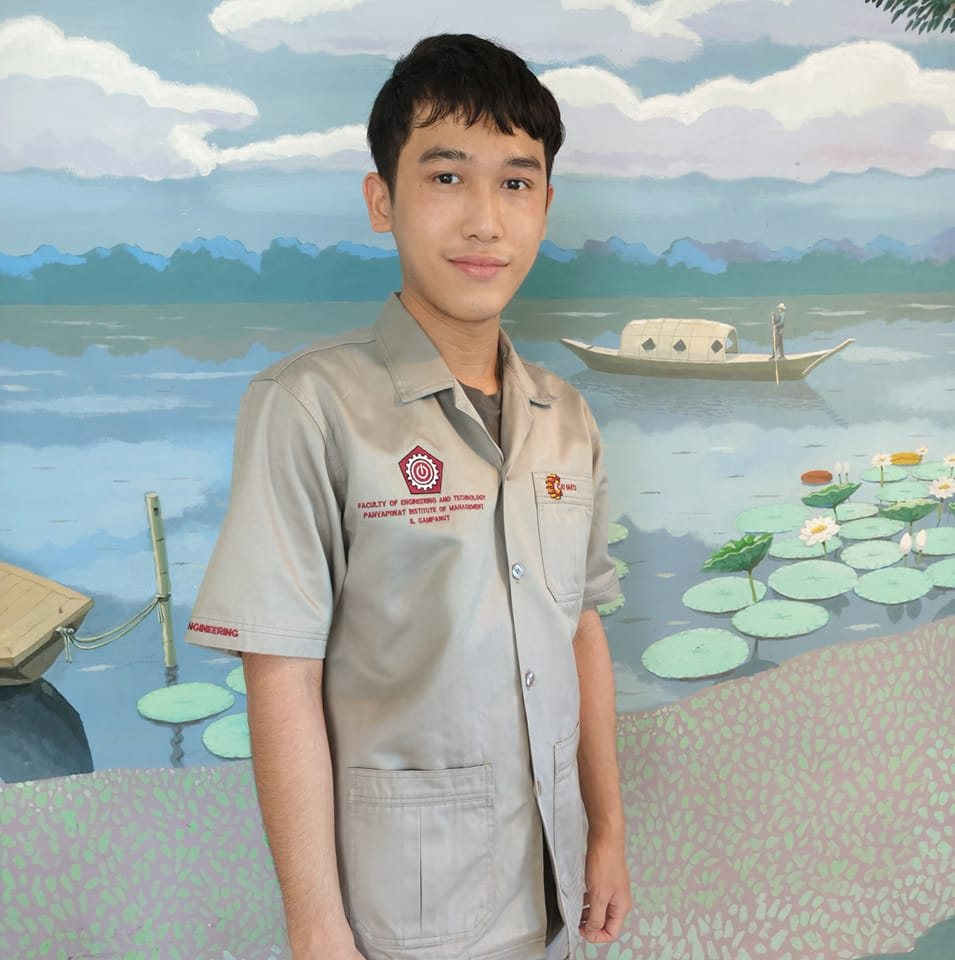

เฟรม
สาขาวิชา: CAI
กลุ่มเรียน (Section): 2.2
ผมมีความสนใจใน Full Stack Web Development เพราะผมต้องการเข้าใจการพัฒนาเว็บไซต์ทั้งส่วนหน้าและหลัง เพื่อที่จะสามารถพัฒนาเว็บแอปพลิเคชันที่ครบวงจรและมีประสิทธิภาพได้ด้วยตัวเอง
ผมคาดหวังว่าจะได้เรียนรู้ทักษะทั้งด้าน Frontend และ Backend รวมถึงการเชื่อมต่อฐานข้อมูล การใช้งาน API และการสร้างเว็บแอปพลิเคชันที่ตอบโจทย์ความต้องการของผู้ใช้ได้
จุดอ่อนของผมคือการทำงานกับโค้ดที่ซับซ้อนและการจัดการกับข้อผิดพลาด (debugging) แนวทางการพัฒนาคือการฝึกเขียนโค้ดทุกวัน และทำความเข้าใจโครงสร้างของโปรแกรมผ่านการเรียนรู้และการสร้างโปรเจกต์ใหม่ๆ
ผมชื่นชอบเว็บไซต์ https://en.wikipedia.org/wiki/Dog เนื่องจากการออกแบบที่เรียบง่าย แต่มีประสิทธิภาพสูง